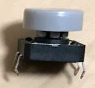
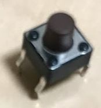
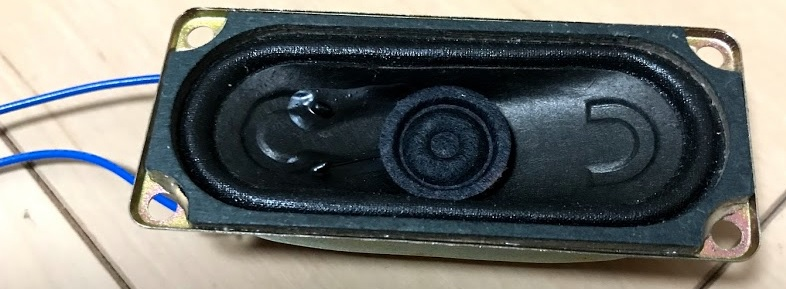
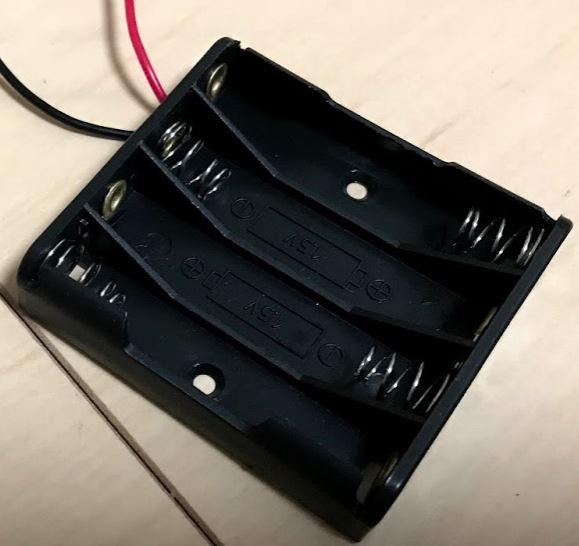
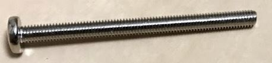
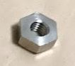
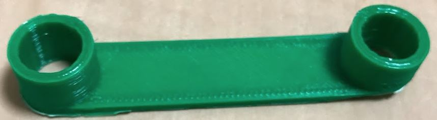
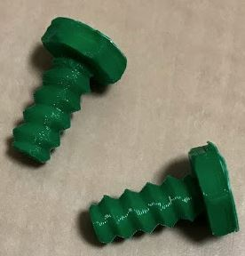

戻る
## 概要
RakuChordの2019年2月時点での最新版、通称nextの組み立て説明書です。
この製品はキットとして提供します。自分で組み立てる必要があります。
また、この製品を使って起きたいかなる問題も作者は責任を負いませんので、自己責任にて使用してください。
## 必要工具
- はんだごて
- はんだ
- プラスドライバー
- ラジオペンチ
- ニッパー
- テスター（なくてもよい）
## 部品の確認
キットによって微妙に写真と違う色や形のものが入っていることがありますが、刻印などに従ってどの部品か判断してください。
また、今後の組み立て説明の写真についても、同様に同梱されている部品とは色や形が違う部品が使用されていることがあります。刻印を確認しながら組み立ててください。
|画像|名称|個数|備考
|:--|:-- |:---|:---
||タクトスイッチ（大）|21|12mm * 12mmサイズのスイッチ
||タクトスイッチ（小）|7|6mm * 6mmサイズのスイッチ
|

|LM386 オーディオアンプ|1|386と書かれた8ピンのIC
|

|スライドスイッチ|1
|

|220uF電解コンデンサ|1|220uFと書かれた電解コンデンサ
|

|10uF電解コンデンサ|2|10uFと書かれた電解コンデンサ
|

|0.1uFコンデンサ (104)|1|104と書かれたコンデンサ(形状は違うものがあります、104の刻印を確認してください)
|

|1000pFコンデンサ(102)|1|102と書かれたコンデンサ
||8Ω3W長方形スピーカ|1
|

|XHコネクタ|2|電池ケースとスピーカに組み立て済み
|

|XHコネクタハウジング|2
|

|3.5mmオーディオジャック|1
||単4電池x4ケース|1
||M3 * 40mmねじ|4|
||M3ナット|4
|

|LED|1
|

|470Ω抵抗|1|黄紫茶金の抵抗
|

|10KΩ抵抗|3|茶黒橙金の抵抗
|

|1KΩ抵抗|1|茶黒赤金の抵抗
|

|L字8ピンヘッダ|1
|

|1列8ピンソケット|1|色違いのものもあります。
|

|ダイオード|28|
|

|OLED|1| 強い力が加わると割れてしまうので気を付けてください
|

|Arduino Nano|1|互換品です
|

|15ピンヘッダ|2|
|

|メイン基板|1
|

|サブ基板|1
|

|筐体・カバースペーサー|1
|

|筐体・フロントパネル|1
|

|筐体・本体|1
||電池固定バー|1|色違いのものもあります
||電池固定ねじ|2|色違いのものもあります
乾電池は付属しません 単四乾電池4本が必要です
## 表、裏の確認
まず基板の表・裏に注意してください。
まずは、基板の裏側から部品を実装していきます。

## ダイオード
ダイオードには極性があります。
”→”のような記号が刻印されているので、矢印の先の方向にダイオードの黒い帯が向くように配置してください。

部品の裏はこのようになっています。奥まで差し込んだのちにはんだ付けしてください。
また、部品の足をハの字状に折り曲げることで裏返したときに落下を防ぐことができます。

一気に21個のダイオードを配置すると写真のようになります。

裏面はこのようになっています。はんだ付けします。

その後ニッパーで足を短く切り取ります。針金が飛び散るので、注意して作業してください。

すべてニッパで切るとこのようになります。
以降、はんだ付けと、足の切断について、説明は省略しますが、足の長い部品はすべてこのように組み立ててください。

## 抵抗
徐々に背の高い部品をはんだ付けしていきます。
抵抗は種類が多いので、気を付けてください。向きは関係ないので、気にせず配置して構いません。
また、1kΩの抵抗は、はんだ付け箇所がわかりにくいので注意してください。（設計ミス）

## コンデンサとアンプ
コンデンサも種類があるので気を付けてください。向きは関係ないです。
アンプは向きに注意してください。

## 電解コンデンサ
電解コンデンサを設置します。
電解コンデンサは長く、そのまま取り付けると他の部品を取り付ける際の邪魔になるので写真のように、90度倒すことをお勧めします。
次の写真の220uFの電解コンデンサは同梱されているもの違います。固定方法が違うので、220uFの電解コンデンサについてはもう一つ次の写真を参考にしてください。

220uFコンデンサが大きいので、そのまま設置すると以降の組み立てでスピーカと干渉してしまします。そこで写真のように、ICの上に乗せるようにして固定してください。

## コネクタ
コネクタは向きに注意してください。

## Arduino Nano
Ardinoの固定は、ピンの向きに注意してください。
長いほうがArduinoの側に来るようにして、基板の表に露出するピンの長さを短くなるようにします。

表側です。ピンがほとんど出ていないことを確認してください。

## 電源スイッチ
電源スイッチです。今までとは逆に基板の表面に固定することに注意してください。
今後のことを考え、スイッチはOFFにしておいてください。

スイッチの裏面ですが、後の組み立てでスピーカと接触する可能性があるので、写真のように折り曲げてください。

## オーディオジャック
オーディオジャックもスイッチと同じ面に設置します。

## 動作確認
スピーカと電源の配線をつなげて、電源スイッチを入れてください。
1秒ほど起動音がスピーカから鳴れば、ここまでの作業は問題ありません。
動作がおかしい場合は、なるべく早く電源ケーブルを抜いて、ここまでの手順を確認してください。
動作確認ができたら、電源をオフにし、バッテリー、スピーカーを取り外します。

## メインスイッチ
メインのスイッチを21個設置します。
色は好みで好きにして構いません。（お勧めは写真の並びです）

## LED
電源LEDを設置します。
向きがあるので注意してください。

## サブ基板のダイオード
サブ基板にもダイオードを設置します。基板の表裏と、ダイオードの向きに注意してください。

## サブ基板のスイッチ
サブ基板のスイッチを設置します。
色は好みで好きにして構いません。（お勧めは写真の並びです）

## 2つの基板の結合
写真のように、8ピンソケットにL字ピンを差し込みます。

写真のように、基板2枚を、先ほどのソケットを介してL字につなげます。

ケースに差し込んで（サブ基板を滑り込ませる溝があります）、この状態ではんだ付けします。
はんだ付け後は、作業をしやすくするために、ソケットを外すと良いでしょう。

## OLEDの取り付け
OLEDは強く力を加えると壊れてしまうので注意して扱ってください。

横から見て、このように、基板に対して水平になるように固定して、はんだ付けしてください。

最終的に、このようにスペーサーの高さ以内にOLEDが収まるようにしてください。

## 再び動作確認
ここで再び、スピーカと、電池ボックスをつなげて動作を確認します。
動作がおかしい場合は、なるべく早く電源ケーブルを抜いて、ここまでの手順を確認してください。
電源LEDの点灯と起動音と、OLEDに文字が表示されることを確認したら、スピーカと電池ボックスを外します。
## ケースの組み立て
スピーカをこのように配置します。

電池ボックスに電池を入れ、電池を押さえる部品を写真のように用意します

電池を押さえる部品のねじ部分を時計回りに回して、電池ボックスを固定します。

## ねじ止め
写真のように、ナットを穴にそっと落とします。

スペーサー、アクリル板をねじで固定します。
写真のように指でナットを押さえつつ、上からドライバーでねじ止めします。

最終的に、このようにナットが奥のほうで固定されます。
これを4か所実施します。

## 完成
お疲れさまでした。